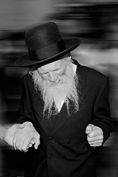
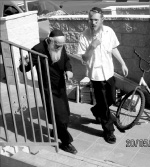

Preparing the World
He worked alone, without helpers. He ran around all day, every day, from one chesed to another. * He spoke from the heart about the obligation to be involved in the Rebbe’s mivtzaim. * He focused on Inyanei Moshiach and Geula, not hesitating to speak about who Moshiach is, and it was all with his ty

Rabbi Shimon Friedman was a unique man. He was unique on the mivtzaim front, being constantly busy with Mivtza T’fillin and other mivtzaim without any assistance. He was one man who did the work of dozens of people younger than he.
He was unique anywhere he went, whether in the homes of Admurim and rabbanim, government offices, or at the offices of Knesset members and ministers. He had no lobbyists at his disposal and yet, alone, he initiated storms of protest.
He was unique in his hidden work on behalf of the needy, orphans and widows. He dedicated his life to helping them. Even when he approached eighty, he continued to help, expending his energy and money. It was all done secretively, without publicity or the need for appreciation.
He was unique in his strong faith that “hinei, hinei Moshiach ba,” and he spread this faith wherever he went, proclaiming “Yechi” with a deep, inner conviction. He spread the Besuras Ha’Geula among many groups.
IN AN ORDERLY WAY
Rabbi Shimon Friedman was born on 12 Teves 5694 in Yerushalayim. His father, R’ Menachem Mendel, was a distinguished Chabad Chassid and a descendent of Rabbi Akiva Yosef Schlesinger, author of Lev HaIvri. His mother was descended from the Alter Rebbe as the great-granddaughter of Rebbetzin Menucha Rochel Slonim.
In his youth, he learned in the Eitz Chaim Talmud Torah and Yeshiva in Yerushalayim. His abilities in learning and his exalted middos were recognized even back then. He began afflicting himself with fasts and even refrained from sleeping in a bed. When the Rebbe heard about this, he instructed him to “serve Hashem in an orderly way” and to stop these afflictions.
He stopped this behavior immediately. Even many years later, when he became overly excited about matters of k’dusha, he would stop himself and say: The Rebbe told me to serve Hashem in an orderly way.
He married Shoshana, the daughter of Rabbi Yisroel Noach Duchman, a distinguished Chabad Chassid. After they married, he continued learning for many years in the Eitz Chaim kollel. He lived very modestly and received financial help from his brother who lived in America.

In the early years of the Rebbe’s nesius, when Tzeirei Chabad in Yerushalayim began spreading Chassidus with the Rebbe’s encouragement, R’ Shimon became more involved in the ways of Chassidus and the teachings of Chabad. When he wanted to visit the Rebbe, he received an astonishing answer, which was that he should not leave Eretz Yisroel.
Over the years, he became an ardent Chassid and a fervent mekushar of the Rebbe. Any instruction from the Rebbe was immediately and enthusiastically accepted by him and then implemented with great devotion. When it came to the Rebbe’s inyanim, he even reached out to g’dolei ha’dor like Rabbi Yitzchok Yaakov Weiss z”l of the Eidah HaChareidis, Rabbi Moshe Aryeh Freund z”l of the Eidah HaChareidis, Rabbi Shlomo Zalman Auerbach z”l, and the Admur of Erloi. At various farbrengens he would adjure the Chabad Chassidim in Yerushalayim to fulfill the Rebbe’s horaos and to get involved in mivtzaim. He would constantly shower words of encouragement and support and was the driving force behind many different activities. He was also modest and humble and stayed away from kavod.
His righteousness, asceticism and his acts of chesed, along with the brachos he constantly bestowed on people, earned him the nickname “Shimon HaTzaddik.” Some say that when Rabbi Ezriel Zelig Slonim had yechidus, and later when Rabbi Chaim Stern had yechidus, both distinguished Chassidim of Yerushalayim, the Rebbe referred to him as “Shimon HaTzaddik.”
ON THE BATTLEFRONT
For over forty years, he fought fiercely for the amending of the law “Mihu Yehudi.” He was a leading askan for Shleimus Ha’Am in the early stages of the battle to amend the law, back in the early seventies all the way until recently. He fought devotedly and intensively without a break and without despair despite the many years that had passed. In his unique way of Ahavas Yisroel combined with firmness, he sent letters to rabbanim and public figures, ministers and Knesset members, and even met with many of them.
The mashpia Rabbi Moshe Weber a”h once said that during the period when “Mihu Yehudi” was the topic of the day, he stood with R’ Shimon under the porch of the house of the Interior Minister at that time, holding signs that expressed their protest about the minister’s opposition to the amending of the law. They did not shout and they made no proclamations, but just stood there for a long time. Nearby residents poured buckets of water on them but they stuck it out. They took off their hats so they wouldn’t get ruined and said to their antagonists: Even if you continue pouring water, that won’t deter us. We will continue demonstrating here!
From where did he get the strength to fight for decades? No doubt, every time the Rebbe said a sicha about “Mihu Yehudi” or Shleimus Ha’Aretz, R’ Shimon would get a copy of the tape and listen to it. The Rebbe’s words inspired him to renew his work.
Twenty-five years ago, he wanted to meet with Shimon Peres, who was the Foreign Minister at the time and ran a rotation government with Yitzchok Shamir. Details of the meeting are still unclear. He mentioned just a little bit about it when he went to console Peres about a year ago on the passing of his wife Sonya. It was twenty-five years ago that he waited downstairs from Peres’ house and when Peres came home from the office, he tried to talk to him about the importance of amending the law of “Mihu Yehudi.” Peres said he could only speak to him the next morning.
R’ Shimon waited all night near the door. In the morning, when Peres came out in his pajamas to get the newspaper, he encountered R’ Shimon standing there. This time too, the surprised Peres tried to push him off, but then his wife appeared and brought R’ Shimon into the house and served him a cup of tea. R’ Shimon was then able to convey his important message about the need to amend the law.
About a year ago, when Peres sat Shiva for his wife, R’ Shimon visited him and importuned him to address the issue of “Mihu Yehudi,” saying it wasn’t too late. When it turned out that there was no one to say Kaddish for Sonya Peres, R’ Shimon said he would do it. He said Kaddish for eleven months which ended three months ago.
TRUE GIVING
He was an outstanding doer of chesed. A small favor and a big favor were equal to him. He considered walking an old man home or helping a child cross the street equivalent to giving large amounts to tz’daka. Over the years, he received large sums of money from his brother in America and other goodhearted Jews, which he would disburse to the needy in Yerushalayim and Kfar Chabad. He was a one-man chesed operation. Without helpers he would buy items in the grocery store and walk till he got to the home of some needy people and give them what turned their Shabbos into a delight. The fact that he himself sufficed with little did not take away from his understanding that other people needed delicacies for Shabbos.
How did the young masmid and lamdan turn into someone who spent his days doing chesed? He once revealed that it was Rabbi Aryeh Levin (A Tzaddik In Our Time) who told him that when he began doing his acts of chesed, he wondered whether he was doing the right thing since it took him away from Torah study. He consulted with the mekubal known as the “Leshem,” who told him that since his soul was drawn to chesed that was his mission in life. R’ Shimon said, “I also felt that my soul is drawn to doing chesed. Based on what the Leshem said, I understood that this is what I should do.”
Those who knew him well were astounded to see how he devoted himself to doing chesed. For many years he would regularly help an old man put on t’fillin. Every day, R’ Shimon waited for him in shul and when the man came, he would help him wrap the tallis and t’fillin. While the man davened, R’ Shimon sat and learned. After the davening, R’ Shimon helped him take off the t’fillin and fold his tallis and then he immediately ran off to do other acts of chesed.
You could always see him leading old people to their homes or to shul or wherever they wanted to go. He always rushed about, on his way to another act of chesed.
He lived for a period of time in Kfar Chabad. Many remember the following episode:
A passenger plane was delayed and landed close to the onset of Shabbos. Having no choice, the passengers were quickly brought to Kfar Chabad where they were warmly welcomed. At the davening Friday night, R’ Shimon noticed that one of the guests was wearing Chassidic garb but was not wearing a shtraimel. When he found out that the man’s shtraimel was in the luggage left behind at the airport, he took his own shtraimel and gave it to the man. R’ Shimon then wore his weekday hat. The loan extended well beyond that Shabbos, as due to the chaos of the situation the Chassid went on his way without returning the shtraimel to R’ Shimon. R’ Shimon made do with a simple hat on Shabbos from then on.
HIS T’FILLIN BROUGHT YESHUOS
A telephone call during the Shiva was the cause of great excitement. It was the postscript to an amazing story that took place in the last months of R’ Shimon’s life and ended after his passing:
R’ Lieberman, a shliach in China, met a young Jewish man who intended on marrying a non-Jewish woman. The shliach tried to dissuade him but was unsuccessful. The young man finally agreed to put on t’fillin, but was unwilling to listen to anything more than that.
The shliach visited Eretz Yisroel around this time and told R’ Shimon about this sad story. He said he did not have the means to get t’fillin for the man. R’ Friedman asked him whether the man would really use them or would stick them away in the closet. When the shliach said he believed the man was serious about using them, R’ Shimon asked him to give him a day.
The next day, he brought a pair of t’fillin to the shliach. The shliach asked him where the t’fillin came from and when he realized that they were R’ Shimon’s, he was horrified and refused to accept them. “Listen,” pleaded R’ Shimon, “I asked a rav and he paskened that I can give you my t’fillin. I live among Jews and can borrow t’fillin every day. Where will that fellow get t’fillin from?”
The reasoning was sound and simple, and so R’ Shimon begged the shliach until he agreed to take his t’fillin. For months, R’ Shimon went around to shuls and borrowed t’fillin. One time, a gabbai even yelled at him – how could a Jew like him not have t’fillin of his own? …
Months went by, R’ Shimon passed on, and the phone rang in his house. On the line was the shliach from China who did not know that R’ Shimon had died. He had called to say that the young man who had been given R’ Shimon’s t’fillin had announced he was canceling his wedding plans!
In another story, it happened one year that R’ Shimon’s brother Mordechai went to visit Eretz Yisroel. R’ Mordechai regularly sent large sums of money to R’ Shimon both to support his pious brother and for him to distribute to the poor. He brought a nice sum of money for tz’daka and showed up at his brother’s house late one night.
Just a few minutes went by and R’ Shimon left the house. His brother wondered where he had disappeared to and waited up for him. When R’ Shimon returned, he asked him where he had gone at that hour. R’ Shimon explained: The money you gave me was for the poor, so why shouldn’t they have a good night’s sleep? If I give it to them tomorrow, they will be worried for yet another night.
BLESSING THE JEWISH PEOPLE
R’ Shimon’s chesed included not only actions but good words, words of consolation and love. Being a Kohen, he always blessed people. Many Yerushalmim would ask him for a bracha and to think of them in his pure t’fillos. When someone stopped him on the street and asked him for a bracha, R’ Shimon would stop rushing and as though he had all the time in the world, he would close his eyes and fervently recite the priestly blessing and add numerous other personal brachos. Many people would wait for him at the Kosel, as he visited the Kosel several times a week in order to man a t’fillin stand. They sought his brachos and he would willingly give them.
FUNERAL EREV YOM TOV
On the night of Erev Shvii shel Pesach, R’ Shimon was in the home of his son R’ Menachem Mendel (shliach in Ohr Yehuda). He suddenly asked to immerse in a mikva that evening, something he had never asked before. The next day, as he davened vasikin at the Sephardic shul, he asked for an aliya which was also something he never did before. Another unusual thing he did was read the Krias Shma of the morning far longer than usual.
When he finished davening he returned to his son’s house where ten bachurim had come to help run Seudos Moshiach. Breakfast needed to be made for the family and the guests. R’ Shimon did not sit in the living room and learn, as he loved to do. He went to the kitchen and began working alongside the other family members. He suddenly asked everyone to stop what they were doing. He took a HaYom Yom and opened it to 8 Av and read the aphorism of the Rebbe Maharash which says: What good is Chassidus and piety if the main quality is lacking – Ahavas Yisroel, love of another – even to the extent of causing (G-d forbid) anguish to another!
When the family wondered why he was reading a statement for the month of Av and not that day’s entry, he said that the Rebbe had placed this statement on the date of Erev Tisha B’Av because Ahavas Yisroel is a “cure before the blow” of the churban. The same is true nowadays, that Ahavas Yisroel is the way to achieve Geula.
Shortly after he finished talking, he collapsed. He was taken to Tel HaShomer hospital and returned his neshama to its Creator soon afterwards at the age of 78.
The funeral left the Chabad shul in Shikun Chabad in Yerushalayim two hours before Yom Tov. Despite the hour, hundreds of Chassidim and other people were in attendance at the funeral of the tzaddik, R’ Shimon.
His son, R’ Menachem Mendel spoke, using the opportunity to urge people to participate in a Seudas Moshiach with anticipation of the Geula, and he proclaimed in a voice choked with tears, “Yechi Adoneinu Moreinu V’Rabbeinu Melech HaMoshiach L’olam Va’ed.”
Although R’ Shimon was never interviewed and was not written about, upon his passing the frum newspapers were full of articles about this Lubavitcher tzaddik. Hamodia had a long article about him. It mentioned that Rabbi Naftali Frankel, member of the Badatz Eidah HaChareidis and longtime neighbor of his, said “Many volumes can be filled with the deeds of Shimon HaTzaddik.
R’ Shimon is survived by his sons: R’ Mordechai Yoel and R’ Menachem Mendel; and his daughters: Devorah Feige Eidelman, Yocheved Gurkov, Yehudis Weiner. His is also survived by thousands of spiritual descendants of all backgrounds and groups.
PREPARING THE WORLD
By his grandson, Moshiach Friedman
Upon hearing of the sudden passing on the eve of the last days of Pesach, numerous images came to my mind, numerous memories of special times with my grandfather. Who am I to speak in praise of him, never mind to eulogize him, for in Chabad we don’t eulogize, but one important point immediately came to mind, which in my humble opinion is important for all of us to remember, for every Chassid of the seventh generation.
Greater people than I can speak of his genius, of his thorough knowledge of Nigleh and Chassidus, about his care in hiddur mitzva, about his acts of tz’daka and chesed with constant dedication to helping others materially and spiritually.
Foremost was his solid hiskashrus, heart and soul, to the Rebbe MH”M shlita, even though he never merited seeing the Rebbe (because of the Rebbe’s instruction to him not to leave Eretz Yisroel). His love for the Rebbe’s ten mitzva campaigns was well known, along with his enthusiasm when he reviewed a sicha or maamer and the tremendous chayus when he listened to every word of the Rebbe’s teachings.
Before a broad array of people, from across the spectrum of religious Jews and the general public, simple people alongside g’dolim, who came to hear divrei Torah and Chassidus at his farbrengens and drashos, he never hid his faith and loyalty to the Nasi Ha’dor, the Lubavitcher Rebbe. He and only he is the leader of the Jewish people and we all need to submit to him, even other Admurim and rabbanim.
Yet, beyond all this, is the “main point,” which Chassidim allude to when they wish one another “may we always hold on to the nekuda.” My grandfather merited “belonging to the Rebbe.” He merited standing proudly on the front lines with the “only and main shlichus” that the Rebbe gave us on Shabbos Parshas Chayei Sara 5752, to prepare the world to welcome Moshiach. In this avoda, this nekuda of hiskashrus in our unique times, he had the merit to work forcefully and energetically.
[Parenthetically, until today, those who daven in the shul in Shikun Chabad in Yerushalayim remember that summer Shabbos at the end of 5752, when R’ Shimon HaTzaddik recited the brachos at the bris of his grandson, “and his name in Israel will be: Moshiach …” and a commotion ensued.]
At every opportunity he reminded and publicized to everyone about the Rebbe’s prophecy: “Hinei zeh Moshiach ba.” Every time he was present when “Yechi” was proclaimed, he would stand tall and respond in a loud voice with the same d’veikus and kavana that he had with everything of k’dusha that he did. And there was his enthusiastic dancing of “Yechi” with simcha for the Geula.
My childhood memories are full of these images, of gatherings for Kabbalas P’nei Moshiach that took place in Eretz Yisroel, with my grandfather in attendance, going in person to strengthen the emuna in the Besuras Ha’Geula and the Goel.
Two days before he passed on, when I called my parents, he answered the phone. As soon as I said, “It’s Moshiach,” he got all excited and began blessing us that we merit the hisgalus of the Rebbe MH”M and to bring the holiday sacrifices in the third Beis HaMikdash.
Shneur Zalman Berger. "Preparing the World." Beis Moshiach, no. 836 (June 6, 2012).